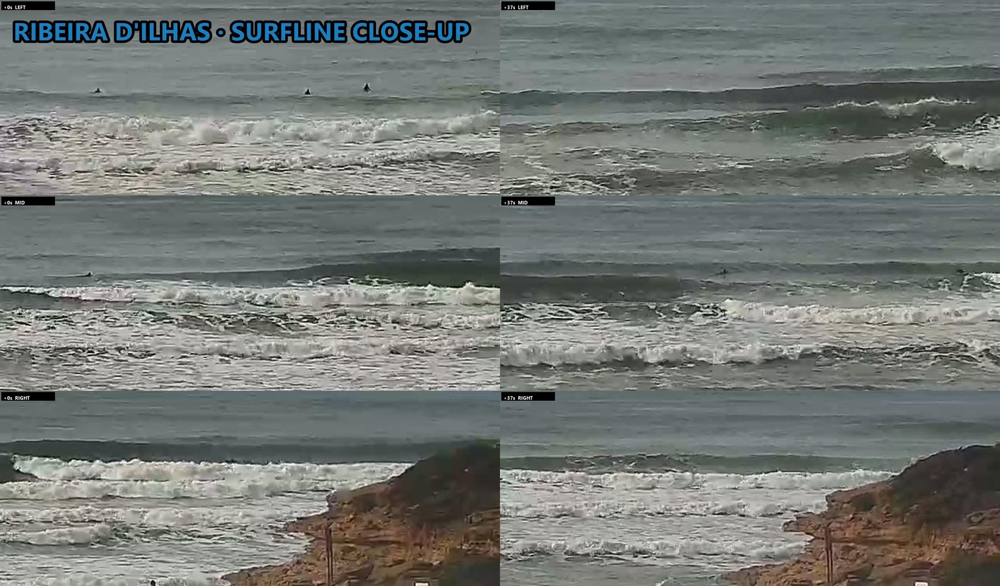
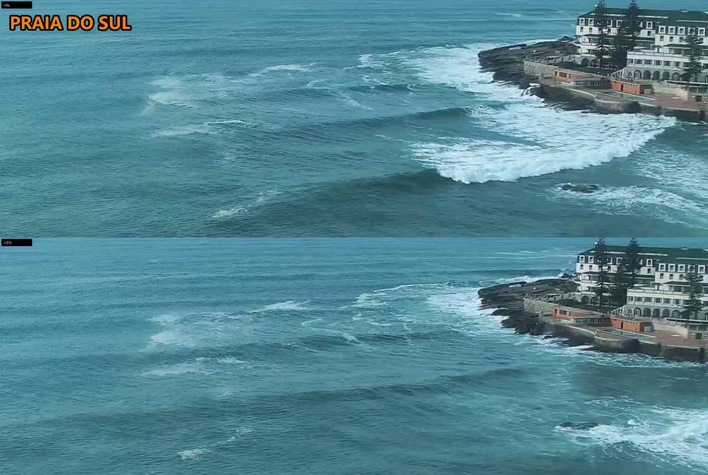
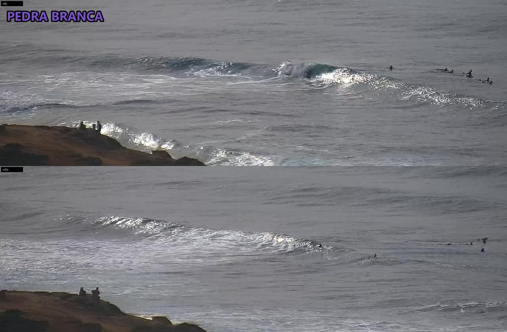
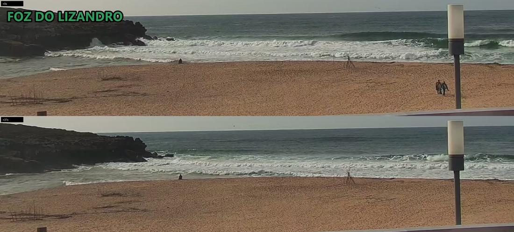

1.2–1.8m★★★½👍 Worth surfing🏄 Quiet
1.2–1.8m★★★👍 Worth surfing
liveoffline
| Ribeira | ★★★½ | 1.2-1.8m | sectiony | +½★ | 4+ quiet | |
|---|---|---|---|---|---|---|
| Norte | ★★★ | 1.2-1.8m | ||||
| Sul | ★★½ | 1.2-1.8m | reef wash | -½★ | 0 | |
| Pedra | ★★★★ | 1.2-1.8m | glassy peaks | +1★ | 7+ busy | |
| Lizandro | ★★★ | 1.2-1.5m | walls, shorebreak | 1+ quiet |
| Ribeira | ★★★½ | 1.2-1.8m | |
|---|---|---|---|
| Norte | ★★★ | 1.2-1.8m | |
| Sul | ★★½ | 1.2-1.8m | |
| Pedra | ★★★★ | 1.2-1.8m | |
| Lizandro | ★★★ | 1.2-1.5m |
| Ribeira | sectiony | +½★ | 4+ quiet |
|---|---|---|---|
| Sul | reef wash | -½★ | 0 |
| Pedra | glassy peaks | +1★ | 7+ busy |
| Lizandro | walls, shorebreak | 1+ quiet |
Wave size & rating: surf-forecast.com Ribeira >>
1.2–1.8m★★★½👍 Worth surfing🏄 Quiet
1.2–1.8m★★★👍 Worth surfing
1.2–1.8m★★★½👍 Worth surfing🏄 Quiet
1.2–1.8m★★★👍 Worth surfing
1.2–1.8m★★★½👍 Worth surfing🏄 Quiet
1.2–1.8m★★★👍 Worth surfing
1.2–1.8m★★★👍 Worth surfing
1.2–1.8m★★★👍 Worth surfing
1.2–1.8m★★½🤔 Marginal
1.2–1.8m★★★👍 Worth surfing
1.2–1.8m★★½🤔 Marginal
1.2–1.8m★★★👍 Worth surfing
1.2–1.8m★★★★👍 Worth surfing🏄 Busy
1.2–1.8m★★★👍 Worth surfing
1.2–1.8m★★★★👍 Worth surfing🏄 Busy
1.2–1.8m★★★👍 Worth surfing
1.2–1.5m★★★forecast👍 Worth surfing
1.2–1.5m★★★👍 Worth surfing🏄 Quiet
1.2–1.5m★★★👍 Worth surfing
1.2–1.5m★★★👍 Worth surfing🏄 Quiet
1.2–1.5m★★★👍 Worth surfing
1.2–1.5m★★★👍 Worth surfing🏄 Quiet
1.2–1.5m★★★👍 Worth surfing
1.2–2m★★★forecast👍 Worth surfing
1.2–1.8m★★★forecast👍 Worth surfing
1.2–1.8m★★★½👍 Worth surfing🏄 Quiet
4 surfers
sectiony, crumbly walls on the falling tide; close-up L3 M1 R0 / L1 M2 R0 -> ~4, sheet agrees, pack thinned from ~17

1.2–1.8m★★½🤔 Marginal
0 surfers
swell mostly washing over reef, few clean faces; nobody in detail or crowd crops

1.2–1.8m★★★★👍 Worth surfing🏄 Busy
7 surfers
glassy A-frame peaks, wave ridden in detail +25s; ~7 in crowd crop both frames

1.2–1.5m★★★👍 Worth surfing🏄 Quiet
1 surfer
walls closing into shorebreak; ~1 outside in detail +50s, approximate (wide cam)

1.2–1.8m★★★👍 Worth surfing
surfers unclear
no frames this run, forecast only
| When | Ribeira | Norte | Sul | Pedra | Lizandro |
|---|---|---|---|---|---|
| 2026-11-23 14:00afternoon | FAIR4 | FAIR— | FAIR0 | FAIR7 | FAIR1 |
| 2026-11-23 12:00lunch | FAIR17 | FAIR— | FAIR3 | FAIR11 | FAIR6 |
| 2026-11-23 09:45morning | FAIR13 | FAIR— | FAIR11 | FAIR1 | FAIR14 |
| 2026-11-23 07:30sunrise | FAIR2 | FAIR— | FAIR2 | FAIR— | POOR0 |
| 2026-11-22 16:15dusk | FAIR4 | POOR-TO-FAIR— | POOR-TO-FAIR1 | POOR-TO-FAIR— | POOR-TO-FAIR0 |
| 2026-11-22 14:15afternoon | POOR-TO-FAIR0 | POOR-TO-FAIR— | POOR-TO-FAIR1 | POOR-TO-FAIR— | POOR-TO-FAIR0 |
| 2026-11-22 12:00lunch | POOR-TO-FAIR0 | POOR— | POOR0 | POOR— | POOR-TO-FAIR0 |
| 2026-11-22 09:45morning | POOR-TO-FAIR0 | POOR— | POOR0 | POOR— | POOR0 |